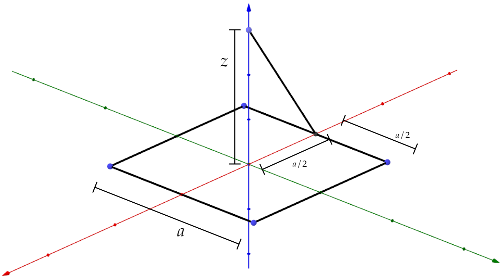

Example 2.2 (page 62) showed us how to calculate the electrif field a distance $z $ above the midpoint of a straight line segment of length $2L $ with uniform line charge $\lambda $:
\[\mathbf{E}_{\text{Ex. 2.2} } =\frac{1}{4\pi \epsilon _0}\frac{2\lambda L}{z\sqrt{z^2 +L^2 }}\hat{z} \]We can recycle this result to quickly find the electric field above a square ring. A square ring is simply 4 of these straight segments in a square arrangement.
In this case, we want $L $ to be (so we recycle the formula):
\[L=\frac{a}{2} \]Consider for a second just one of the sides. The distance from the rod's middle point to the test charge is going to be:
\[\sqrt{z^2 +(a/2)^2 } \] So in the original formula (result from Example 2.2) we will have to change
\[\begin{split} L &{\rightarrow } \frac{a}{2} \\ z &{\rightarrow } \sqrt{z^2 +(a/2)^2 } \end{split} \]AND! We have to add a factor of $\cos \left( \theta \right) $ so we only get the vertical component. Now, instead of $\cos \left( \theta \right) $, consider writing:
\[\begin{split} \cos \left( \theta \right) &= \frac{\text{Adjacent} }{\text{Hypotenuse} } \\ &= \frac{z}{\sqrt{z^2 +(a/2)^2 }} \end{split} \]Since we have 4 sides, we have that the Electric field due to the square ring at a distance $z $ above from the origin is
\[\begin{split} \mathbf{E} &= 4|\mathbf{E}_{\text{Modified Ex. 2.2} }|\cos \left( \theta \right) \hat{\mathbf{z}}\\ &= 4\frac{1}{4\pi \epsilon _0 }\frac{\lambda a}{\sqrt{z^2 +\frac{a^2 }{4}}\sqrt{z^2 +\frac{a^2 }{2}}}\frac{z}{\sqrt{z^2 +(a/2)^2 }} \hat{\mathbf{z}}\\ &= \frac{1}{\pi \epsilon _0 }\frac{\lambda az}{ \left( z^2 +\frac{a^2 }{4} \right) \sqrt{z^2 +\frac{a^2 }{2}}}\hat{\mathbf{z}} \end{split} \]If you are interested in studying how this electric field looks like, consider the following two manipulable plots (both with $\lambda =\epsilon _0 $):
1. At consatnt $a $, variable $z $.
2. At constant $z $, variable $a $.
For a given $z $, there is an $a $ which maximizes the field at that point, and vice versa.